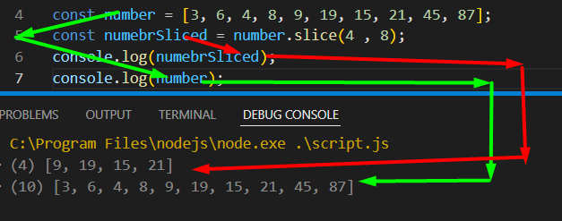

কোন array কে slice করলে সেটার মুল array টা change হয়না । 
কোন array কে splice করলে সেটার মুল array টা change হয়ে যায় ।
splice এর ক্ষেত্রে তার ভ্যালু এর মধ্যে দুইটা ভ্যালু দিতে হয় । splice(toStart , howManeyElements)
অর্থাৎ কত নাম্বার element থেকে শুরু করতে হবে , আর কত গুলা element কে আলাদা করে দিতে হবে ।
splice করার সময় , যেই সব elements কে বাদ করেছি তাদের জায়গায় যদি অন্য element ,,,, replace করে দিতে চাই তবে । নিছের নিয়ম অনুসারে ।
splice(toStart , howManeyElements, newValueX , newValueY, newValueZ)